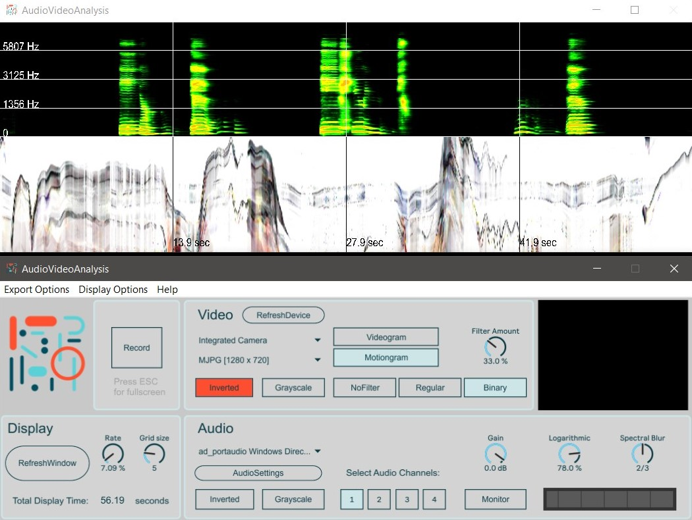

AudioVideoAnalysis
A standalone application for realtime spectral analysis of audio and video.

AudioVideoAnalysis
Features
- Draw spectrogram from any connected sound source.
- Spectral blurring effect and logarithmic frequency distribution of spectrogram.
- Dynamic audio analysis source input (up to 4 channels).
- Monitor audio signal pre-recording.
- Draw motiongram/videogram from any connected camera source.
- Multiple video noise reduction types
Additional features:
- Mulitple display viewing options.
- Post-recording image processing.
- Retrieve spectrogram time, amplitude and frequency info at clickpoint.
- Customize the rate (display length in seconds) of image printing.
- Add analysis grid and markers (frequency and time) with dynamic grid size.
- Export the recorded images.
Credit
Developers:
Alexander Refsum Jensenius,
Aleksander Tidemann,
The software is currently maintained by the
fourMs lab at
RITMO Centre for Interdisciplinary Studies in Rhythm, Time and
Motion
at the University of Oslo.
Reference
If you use this toolbox for research purposes, please reference this
publication:
License
This software is open source, and is shared with
The GNU General Public License v3.0.